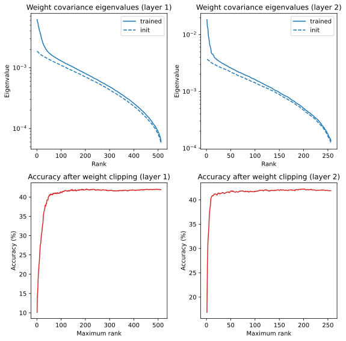

Install all required dependencies
# TODO uncomment before final packaging
# %pip install git+https://github.com/BonnerLab/ccn-tutorial.gitThis notebook shows how to meaningfully compare activations and weights of two networks with different random initial conditions. It uses two architectures: a small MLP and a small CNN both trained on CIFAR-10.
It allows one to reproduce some of the analysis of the rainbow paper in a toy setting: - Compute activation and weight covariance spectra - Show that a subset of low-rank eigenvectors (of weights/activations) contribute to the performance - Align two networks together - Show that two networks learn similar weight covariances after alignment - Generate a new network from the ensemble of networks with similar performance
Note that the reduced size of the networks lead to low accuracies of the base models. Similarly, the precision of the “rainbow” analysis would be improved by considering wider networks.
Also, contrary to learned scattering networks, the networks here learn spatial filters (which are not well-modeled with a Gaussian distribution), have a ReLU non-linearity rather than complex modulus (the asymmetry of ReLU implies that one should probably consider non-zero-mean weight distributions), and do not have batch normalization layers (which leads to reduced alignment and clipping performance).
# TODO uncomment before final packaging
# %pip install git+https://github.com/BonnerLab/ccn-tutorial.gitimport torch
from torch import nn
import torch.utils.data.dataset
import torchvision.transforms as transforms
import torchvision.datasets as datasets
import numpy as np
from matplotlib import pyplot as pltimport time
from tqdm.notebook import tqdm
import copy
import torch
from torch import nn
import torch.utils.data.dataset
import torchvision.transforms as transforms
import torchvision.datasets as datasets
DEVICE = torch.device("cuda" if torch.cuda.is_available() else "cpu")
def get_datasets():
"""Returns train and validation datasets."""
mean = [0.485, 0.456, 0.406]
std = [0.229, 0.224, 0.225]
data_transforms = [
transforms.ToTensor(),
transforms.Normalize(mean=mean, std=std),
transforms.Grayscale(),
]
dataset_class = datasets.CIFAR10
def get_dataset(train: bool): # Returns the train or validation dataset.
root = "./data"
kwargs = dict(
root=root,
transform=transforms.Compose(data_transforms),
train=train,
download=True,
)
dataset = dataset_class(**kwargs)
return dataset
train_dataset = get_dataset(train=True)
val_dataset = get_dataset(train=False)
return train_dataset, val_dataset
def get_dataloaders(batch_size):
"""Returns train and validation dataloaders."""
train_dataset, val_dataset = get_datasets()
def get_dataloader(dataset, shuffle):
return torch.utils.data.DataLoader(
dataset,
batch_size=batch_size,
shuffle=shuffle,
num_workers=0,
pin_memory=True,
)
train_loader = get_dataloader(train_dataset, shuffle=True)
val_loader = get_dataloader(val_dataset, shuffle=False)
return train_loader, val_loader
def initialize_mlp_model(dims):
"""Create a simple MLP model.
:param dims: list of dimensions of each layer, should begin with dimension of input and end with number of classes.
:return: Sequential MLP model
"""
layers = [torch.nn.Flatten()]
for i in range(len(dims) - 1):
layers.append(nn.Linear(dims[i], dims[i + 1], bias=False))
if i < len(dims) - 2:
layers.append(nn.ReLU())
model = nn.Sequential(*layers)
return model
def initialize_cnn_model(
channels, spatial_size=32, kernel_size=5, stride=2, num_classes=10
):
"""Create a simple CNN model.
:param channels: list of channels of each convolutional layer, should begin with number of channels of input.
:return Sequential CNN model
"""
layers = []
for i in range(len(channels) - 1):
layers.append(
nn.Conv2d(channels[i], channels[i + 1], kernel_size=5, stride=2, bias=False)
)
spatial_size = ceil_div(spatial_size - kernel_size + 1, stride)
layers.append(nn.ReLU())
layers.extend(
[
nn.Flatten(),
nn.Linear(channels[-1] * spatial_size**2, num_classes, bias=False),
]
)
model = nn.Sequential(*layers)
return model
def ceil_div(a: int, b: int) -> int:
"""Return ceil(a / b)."""
return a // b + (a % b > 0)
def train_model(model, train_loader, val_loader, lr=0.01, momentum=0.9, num_epochs=5):
"""Simple training of a model with SGD."""
optimizer = torch.optim.SGD(model.parameters(), lr=lr, momentum=momentum)
loss_fn = nn.CrossEntropyLoss()
epoch = 0
model.to(DEVICE)
while True:
# Evaluate on validation set.
one_epoch(
loader=val_loader,
model=model,
loss_fn=loss_fn,
optimizer=optimizer,
epoch=epoch,
is_training=False,
)
# Stop if we are at the last epoch.
if epoch == num_epochs:
break
# Train for one epoch (now epoch counts the current training epoch).
epoch += 1
one_epoch(
loader=train_loader,
model=model,
loss_fn=loss_fn,
optimizer=optimizer,
epoch=epoch,
is_training=True,
)
# Ensure evaluation mode and disable gradients before returning trained model.
model.eval()
for param in model.parameters():
param.requires_grad = False
return model
def one_epoch(loader, model, loss_fn, optimizer, epoch, is_training):
"""Run one train or validation epoch on the model.
:param loader: dataloader to use
:param model: model to train or evaluate
:param loss_fn: loss function (not used during evaluation)
:param optimizer: optimizer (not used during evaluation)
:param epoch: current epoch number (for tqdm description)
:param is_training: whether to train the model or simply evaluate it
:return: average accuracy during the epoch
"""
name_epoch = "Train" if is_training else "Val"
name_epoch = f"{name_epoch} epoch {epoch}"
accuracy_meter = AverageMeter()
if is_training:
model.train()
else:
model.eval()
with torch.set_grad_enabled(is_training):
it = tqdm(loader, desc=name_epoch)
for x, y in it:
x = x.to(DEVICE, non_blocking=True)
y = y.to(DEVICE, non_blocking=True)
y_hat = model(x)
loss = loss_fn(y_hat, y)
accuracy = 100 * torch.sum((y_hat.argmax(-1) == y).float())
accuracy_meter.update(val=accuracy.item(), n=y.shape[0])
it.desc = f"{name_epoch}: {accuracy_meter.avg():.2f}% accuracy"
if is_training:
# compute gradient and do SGD step
optimizer.zero_grad()
loss.backward()
optimizer.step()
return accuracy_meter.avg()
class AverageMeter(object):
"""Computes and stores the average and current value."""
def __init__(self):
self.sum = 0
self.count = 0
def update(self, val, n):
self.sum += val
self.count += n
def avg(self):
return self.sum / self.count
def get_activations(x, layers, model):
"""Returns the hidden activations of a model.
:param x: input to use, tensor of shape (B, C, [N, N])
:param layers: list of integers (j corresponds to output of j-th layer, 0 corresponds to input of model)
:param model: model to use (should be Sequential)
:return: list of saved activations of same length as layers
"""
saved_activations = []
def hook(self, inputs, output): # inputs is a tuple, we assume it is of length 1
saved_activations.append(inputs[0])
# Register hooks to save activations of chosen layers.
for layer in layers:
model[layer].register_forward_hook(hook)
# Forward of model: hooks will be run and activations will be saved.
_ = model(x)
# Clear hooks.
for layer in layers:
model[layer]._forward_hooks.clear()
return saved_activations
def compute_activation_covariances(loader, layers, model1, model2=None):
"""Compute the (cross-)covariance of hidden activations at several layers of one or two models.
:param loader: data loader to use
:param layers: list of integers (j corresponds to output of j-th layer, 0 corresponds to input of model)
:param model1: model to use (should be Sequential)
:param model2: optional model for a cross-covariance (if None, compute the self-covariance of model1)
:return: list of computed covariances (C1, C2), of same length as layers
"""
meters = [AverageMeter() for _ in layers]
# Version of get_activations which treats spatial dimensions as additional batch dimensions.
get_acts = lambda *args: [space_to_batch(act) for act in get_activations(*args)]
for x, _ in tqdm(loader, desc="Computing activation covariance"):
x = x.to(DEVICE)
activations1 = get_acts(x, layers, model1)
activations2 = activations1 if model2 is None else get_acts(x, layers, model2)
for i, (act1, act2) in enumerate(zip(activations1, activations2)):
cov = act1.T @ act2 # (C1, C2), sum of outer products over the batch
meters[i].update(val=cov, n=act1.shape[0])
return [meter.avg() for meter in meters]
def space_to_batch(x):
"""(B, C, [M, N]) to (B[MN], C)."""
if x.ndim == 4:
x = x.permute(0, 2, 3, 1) # (B, M, N, C)
x = x.reshape((-1, x.shape[-1])) # (BMN, C)
return x
def clip(model, layer, basis, dimensions, loader):
"""Clip and evaluate a model.
:param model: trained model to clip (should be Sequential)
:param layer: index of layer to clip
:param basis: ordered orthogonal basis vectors for the clipping, of shape (num_vectors, input_dim)
:param dimensions: list of clipping dimensions
:param loader: data loader to use for the evaluation
:return: list of accuracies
"""
models = []
for dim in dimensions:
projector = basis[:dim].T @ basis[:dim]
model_clipped = copy.deepcopy(model)
model_clipped[layer].weight = torch.nn.Parameter(
model_clipped[layer].weight @ projector, requires_grad=False
)
models.append(model_clipped)
return evaluate(models, loader, desc="Evaluation after clipping")
def evaluate(models, loader, desc="Evaluation"):
"""Evaluate a list of models.
:param models: list of models to evaluate
:param loader: dataloader to use for evaluation
:return: list of accuracies, one per model
"""
accuracy_meters = [AverageMeter() for _ in models]
it = tqdm(loader, desc=desc)
for x, y in it:
x = x.to(DEVICE, non_blocking=True)
y = y.to(DEVICE, non_blocking=True)
for model, accuracy_meter in zip(models, accuracy_meters):
y_hat = model(x)
accuracy = 100 * torch.sum((y_hat.argmax(-1) == y).float())
accuracy_meter.update(val=accuracy.item(), n=y.shape[0])
return [accuracy_meter.avg() for accuracy_meter in accuracy_meters]
def generate_network(reference_model, state_dict_keys, train_loader, val_loader):
"""Generate a new network with a similar performance from a reference network.
NOTE: this function does not take care of batch norm parameters.
They should be recomputed when the previous layer has been generated.
NOTE: this function can be extended in many ways: sample only a subset of layers, change the width of some layers,
use weight covariances averaged over several models...
:param reference_model: reference model for the rainbow model
:param state_dict_keys: list of keys in model state dict to sample
:param train_loader: dataloader used for computing alignment between reference and generated model
:param val_loader: dataloader used to evaluate performance of generated model
:return: list of accuracies, corresponding to the reference and generated models
"""
# The generated model is initialized as a copy of the reference model.
generated_model = copy.deepcopy(reference_model)
state_dict = generated_model.state_dict()
# At beginning of loop, this contains alignment at layer j between generated model and reference model
# (used to determine the correct covariance to generate atoms at layer j).
alignment = None # alignment matrix (C_in_reference, C_in_generated)
results = {} # metric, layer_idx -> performance
# Generate each layer iteratively.
for j, key in enumerate(state_dict_keys):
weight = state_dict[
key
] # (C_out, C_in, [h, w]) depending on conv or fully connected layer
# Compute new weight in reference space.
if j < len(state_dict_keys) - 1:
# Sample Gaussian weights with the same covariance as the trained weights.
# Compute square root of covariance with an SVD (more efficient when C_out << C_in*h*w).
weight_flat = weight.reshape((weight.shape[0], -1)) # (C_out, C_in*h*w)
u, s, vt = torch.linalg.svd(
weight_flat, full_matrices=False
) # (C_out, R), (R,), (R, C_in*h*w) where R = rank
white_gaussian = torch.randn(
u.shape, dtype=weight.dtype, device=weight.device
) # (C_out, R)
colored_gaussian = white_gaussian @ (s[:, None] * vt) # (C_out, C_in*h*w)
new_weight = colored_gaussian.reshape(weight.shape) # (C_out, C_in, [h, w])
else:
# Use the trained classifier.
new_weight = weight
# Realign the weights from the reference model to the generated model (necessary after first layer).
if j > 0:
new_weight = contract(
new_weight, alignment.T, axis=1
) # C_in_reference to C_in_generated
# Set the new weights in the generated model.
# NOTE: this an intermediate model, as sampling the j-th layer means that the j+1-th layer is no longer aligned.
# As such, if evaluated as is, its accuracy would be that of a random guess.
state_dict[key] = new_weight
generated_model.load_state_dict(state_dict)
# Then compute alignment of the generated network with the reference model for the next layer.
if j < len(state_dict_keys) - 1:
next_key = state_dict_keys[j + 1]
# Compute index of layer by relying on Sequential naming convention: next_key is "{layer_idx}.weight".
layer = int(next_key.split(".")[0])
[activation_covariance] = compute_activation_covariances(
train_loader, [layer], reference_model, generated_model
) # (C_in_reference, C_in_generated)
u, s, vh = torch.linalg.svd(
activation_covariance, full_matrices=False
) # (C_in_reference, R), (R,), (R, C_in_generated)
alignment = u @ vh # (C_in_reference, C_in_generated)
# Evaluate models.
return evaluate(
[reference_model, generated_model], val_loader, desc="Evaluation after sampling"
)
def contract(tensor, matrix, axis):
"""tensor is (..., D, ...), matrix is (P, D), returns (..., P, ...)."""
t = torch.moveaxis(tensor, source=axis, destination=-1) # (..., D)
r = t @ matrix.T # (..., P)
return torch.moveaxis(r, source=-1, destination=axis) # (..., P, ...)The CIFAR-10 dataset contains 50,000 training and 10,000 validation images of resolution 32 \times 32. They are divided in 10 classes:

The dataset is automatically downloaded and loaded in memory with torchvision (see the CIFAR10 class). Here we do not perform any data augmentation for simplicity, and convert the images to grayscale for computational efficiency.
train_loader, val_loader = get_dataloaders(batch_size=128)
class_labels = [
"airplane",
"automobile",
"bird",
"cat",
"deer",
"dog",
"frog",
"horse",
"ship",
"truck",
]
# Draw one batch to show some training images
x, y = next(train_loader.__iter__())
fig, ax = plt.subplots(ncols=5, figsize=(10, 3))
fig.suptitle("Random images from the training set")
for i in range(5):
ax[i].imshow(x[i].cpu().numpy().transpose(1, 2, 0), cmap="gray")
ax[i].axis("off")
ax[i].set_title(class_labels[y[i]])Files already downloaded and verified
Files already downloaded and verified
We begin with a barebones feedforward network architecture with two hidden layers.

It computes the function f(x) = \theta \sigma(W_2 \sigma(W_1 x)) with: - x \in \mathbb R^d is an input image reshaped as a vector (d = 32 \times 32), - W_1 \in \mathbb R^{n_1 \times d} the weights of the n_1 neurons in the first layer, - W_2 \in \mathbb R^{n_2 \times n_1} the weights of the n_2 neurons in the second layer, - \theta \in \mathbb R^{c \times n_2} the weights of the classifier, which predicts log-likelihoods for the c = 10 classes, - \sigma is a pointwise non-linearity (here a ReLU).
dims = [
32 * 32,
512,
256,
10,
] # Sizes of layers, [input dim, hidden dims..., output dim (number of classes)]
model = initialize_mlp_model(dims)
print(model)Sequential(
(0): Flatten(start_dim=1, end_dim=-1)
(1): Linear(in_features=1024, out_features=512, bias=False)
(2): ReLU()
(3): Linear(in_features=512, out_features=256, bias=False)
(4): ReLU()
(5): Linear(in_features=256, out_features=10, bias=False)
)We train the network for 5 epochs (passes over the training set). We measure the average accuracy (frequency at which the network correctly predicts the correct class). On a held-out validation set, it increases from 10%, which corresponds to a random guess, to about 43%.
train_model(model, train_loader, val_loader, num_epochs=5)Sequential(
(0): Flatten(start_dim=1, end_dim=-1)
(1): Linear(in_features=1024, out_features=512, bias=False)
(2): ReLU()
(3): Linear(in_features=512, out_features=256, bias=False)
(4): ReLU()
(5): Linear(in_features=256, out_features=10, bias=False)
)Let us focus on the first layer. The weight matrix W_1 of size n_1 \times d contains the weights of the n_1 neurons in the first layer, each being a d-dimensional vector. (This also applies to the other layers. For instance, the second weight matrix W_2 of size n_2 \times n_1 contains the weights of the n_2 neurons in the second layer, each being an n_1-dimensional vector.)
We can view these neurons as being samples from a continuous distribution, and then estimate statistical properties (moments) of this distribution. For instance, assuming a zero mean, we can compute the covariance of the neuron weights as: C = \frac1{n_1} W_1^\top W_1

The covariance reveals how the global geometry of the representation is modified by the neuron population. Indeed, the representation computed by the first layer is \varphi_1(x) = \sigma(W_1 x). Focusing on the weight matrix W_1, we can decompose its effect with a singular value decomposition: W_1 = U \Sigma V^\top.

Recall that the right singular vectors V are also the eigenvectors of the covariance C, while the singular values \Sigma are directly related to the eigenvalues of the covariance C.
This implies that the first layer \sigma(W_1 x) computes the following steps:
The covariance eigenvalues and eigenvectors thus define how the neural code globally changes the geometry of its input before the non-linearity. In particular, if the covariance is low-rank, it indicates that the representation only depends on a low-dimensional projection of the input.
To interpret the eigenvalues of the covariance, we can compare their values after training with their values at initialization. Neuron weights are initialized from a distribution with covariance identity (in PyTorch, each component is by default independently drawn from a uniform distribution). However, the eigenvalues of the empirical covariance computed from only the n_1 neurons are not all one but follow the Marchenko-Pastur distribution. This comparison allows estimating which eigenvalues are significantly non-random.
fig, ax = plt.subplots(figsize=(8, 8), nrows=2, ncols=2)
for layer_idx in range(2):
weight_matrix = model[2 * layer_idx + 1].weight # (N, D)
# Compute eigenvalues and eigenvectors of weight covariance efficiently from the SVD.
_, weight_singular_values, weight_eigenvectors = torch.linalg.svd(
weight_matrix, full_matrices=False
) # (num_eig, dim), descending order
weight_eigenvalues = weight_singular_values**2 / weight_matrix.shape[0]
# Compare with eigenvalues at initialization.
init_weight_matrix = initialize_mlp_model(dims)[2 * layer_idx + 1].weight
init_eigenvalues = (
torch.linalg.svdvals(init_weight_matrix) ** 2 / weight_matrix.shape[0]
)
# Plot the eigenvalues of the weight covariances.
plt.sca(ax[0][layer_idx])
plt.title(f"Weight covariance eigenvalues (layer {layer_idx + 1})")
y = weight_eigenvalues.cpu().numpy()
x = 1 + np.arange(len(y))
plt.plot(x, y, color="tab:blue", label="trained")
plt.plot(
x,
init_eigenvalues.detach().cpu().numpy(),
linestyle="dashed",
color="tab:blue",
label="init",
)
plt.yscale("log")
plt.xlabel("Rank")
plt.ylabel("Eigenvalue")
plt.legend(loc="upper right")
# Clipping analysis.
dimensions = 1 + np.arange(weight_eigenvectors.shape[0])
accuracies = clip(
model, 2 * layer_idx + 1, weight_eigenvectors, dimensions, val_loader
)
plt.sca(ax[1][layer_idx])
plt.plot(dimensions, accuracies, color="tab:red")
plt.title(f"Accuracy after weight clipping (layer {layer_idx + 1})")
plt.xlabel("Maximum rank")
plt.ylabel(r"Accuracy (%)")
plt.tight_layout()
plt.show()
We see that only the largest eigenvalues depart from the Marchenko-Pastur distribution. At low ranks, the spectrum roughly has an exponential decay, as evidenced by the straight line in the log-linear plot (note that rank is in linear scale here to evidence this fact). This gives an estimation of about 50 learned principal components for the first layer, and 15 for the second layer. Further, clipping the neuron weights to these learned principal compoennts incurs a negligible loss of accuracy.
Let us a train a second network with the same architecture on the same dataset but with a different random initialization.
models = [model] + [
train_model(initialize_mlp_model(dims), train_loader, val_loader, num_epochs=5)
]This second network reaches the same accuracy as the first one. Has it arrived at the same solution than the first network?
For both networks, we can compute their weight and activation covariances at each layer. How do we compare them?
A first step is to (visually) compare the eigenvalues of the covariance.
However, this is only a partial comparison. A much stronger comparison can be obtained by comparing the eigenvectors of the covariance. This is achieved by computing the orthogonal change of basis from the eigenvectors for the first network to the eigenvectors for the second network. This is a matrix that we can visualize. If it is close to the identity, then the two sets of eigenvectors are almost the same. On the other hand, if the eigenvectors are really different, then no entry of this matrix will be close to unity.
model_layer_covs = [activation_covariances] + [
compute_activation_covariances(train_loader, layers, models[1])
]fig, ax = plt.subplots(figsize=(16, 8), nrows=2, ncols=4)
for j in range(2):
# Compute weight spectrum and eigenvectors for each model.
weight_spectra = []
weight_eigenvectors = []
for model in models:
w = model[2 * j + 1].weight # (N, D)
u, s, vh = torch.linalg.svd(w, full_matrices=False) # (N, R), (R,), (R, D)
spectrum = s**2 / w.shape[0]
weight_spectra.append(spectrum)
weight_eigenvectors.append(vh)
# Compare weights spectra (stable).
plt.sca(ax[0][2 * j])
plt.title(f"Weight covariance eigenvalues (layer {j + 1})")
for i, spectrum in enumerate(weight_spectra):
y = spectrum.cpu().numpy()
x = 1 + np.arange(len(y))
plt.plot(
x,
y,
color=["tab:blue", "tab:orange"][i],
linestyle=["solid", "dashed"][i],
label=f"Network {i + 1}",
)
plt.yscale("log")
plt.xlabel("Rank")
plt.ylabel("Eigenvalue")
plt.legend(loc="upper right")
# Compare weight eigenvectors (unstable after first layer because no alignment).
plt.sca(ax[1][2 * j])
stab = torch.abs(weight_eigenvectors[0] @ weight_eigenvectors[1].T) # (R, R)
plt.imshow(stab.T.cpu().numpy()[:50, :50], cmap="cividis", vmin=0, vmax=1)
plt.colorbar(shrink=0.75)
plt.title(f"Cos sim of weight eigenvectors (layer {j + 1})")
plt.xlabel("Rank (network 1)")
plt.ylabel("Rank (network 2)")
ticks = np.asarray([1, 10, 20, 30, 40, 50])
plt.xticks(ticks=ticks - 1, labels=[str(i) for i in ticks])
plt.yticks(ticks=ticks - 1, labels=[str(i) for i in ticks])
# Compute activations spectrum and eigenvectors for each model.
activation_spectra = []
activation_eigenvectors = []
for layer_covs in model_layer_covs:
cov = layer_covs[j] # (C, C)
eigenvalues, eigenvectors = torch.linalg.eigh(cov)
# Sort in descending order and transpose.
eigenvalues, eigenvectors = eigenvalues.flip(-1), eigenvectors.flip(-1)
eigenvectors = eigenvectors.T # (R, D)
activation_spectra.append(eigenvalues)
activation_eigenvectors.append(eigenvectors)
# Compare activation spectra (stable).
plt.sca(ax[0][2 * j + 1])
plt.title(f"Activation covariance eigenvalues (layer {j + 1})")
for i, spectrum in enumerate(activation_spectra):
y = spectrum.cpu().numpy()
x = 1 + np.arange(len(y))
plt.plot(
x,
y,
color=["tab:green", "tab:purple"][i],
linestyle=["solid", "dashed"][i],
label=f"Network {i + 1}",
)
plt.yscale("log")
plt.xscale("log")
plt.xlabel("Rank")
plt.ylabel("Eigenvalue")
plt.legend(loc="upper right")
# Compare activation eigenvectors (unstable because no alignment)
plt.sca(ax[1][2 * j + 1])
stab = torch.abs(
activation_eigenvectors[0] @ activation_eigenvectors[1].T
) # (R, R)
plt.imshow(stab.T.cpu().numpy()[:50, :50], cmap="cividis", vmin=0, vmax=1)
plt.colorbar(shrink=0.75)
plt.title(f"Cos sim of activation eigenvectors (layer {j + 1})")
plt.xlabel("Rank (network 1)")
plt.ylabel("Rank (network 2)")
ticks = np.asarray([1, 10, 20, 30, 40, 50])
plt.xticks(ticks=ticks - 1, labels=[str(i) for i in ticks])
plt.yticks(ticks=ticks - 1, labels=[str(i) for i in ticks])
plt.tight_layout()
plt.show()
Weight and activation spectra are the same across random initialization. However, eigenvectors are not the same except for the first layer weights. The reason is that deeper eigenvectors depend on the particular individual neurons of the first layer, not just their population statistics. Network alignment is needed to take that into account.
The similarity between activation covariance eigenvalues suggests that the representations learned by the two networks might have shared latent dimensions. The dissimilarity between the activation covariance eigenvectors show that these latent dimensions are expressed in different bases.
The two networks can be aligned together with PLS-SVD (hyper-alignment). Given representations \varphi(x) and \psi(x) for the two networks, it computes the best orthogonal alignment matrix A that aligns \varphi to \psi: \min_A \mathbb E_x[\|A\varphi(x) - \psi(x)\|^2] \quad\text{such that}\quad A^\top A = I_d
This is akin to a linear regression, but additionally imposes that A is orthogonal in order to preserve the geometry of the latent dimensions.
The optimal alignment A can be computed explicitly from an SVD of the cross-covariance matrix: A = U V^\top \quad\text{with}\quad \mathbb E_x[\psi(x)\varphi(x)^\top] = U\Sigma V^\top


The magnitude of the singular values \Sigma indicate the amount of variance that is explained by the alignment A. Indeed, the unexplained variance (the residual error) can be written as: \mathbb E_x[\|A\varphi(x) - \psi(x)\|^2] = \mathbb E_x[\|\varphi(x)\|^2] + \mathbb E_x[\|\psi(x)\|^2] - 2 \,\mathrm{tr}\ \Sigma
To evaluate the effectiveness of the alignment procedure, we can thus compute an r^2 measure as the ratio between the explained variance and the total variance: r^2 = \frac{\mathrm{tr}\ \Sigma}{\sqrt{\mathbb E_x[\|\varphi(x)\|^2]}\sqrt{\mathbb E_x[\|\psi(x)\|^2]}}
model1, model2 = models
cross_covs = compute_activation_covariances(train_loader, layers, model1, model2)
# cross_covs is a list of activation covariances (C1, C2) for each layer.aligns = [] # layer_idx -> alignment
for j in range(2):
cross_cov = cross_covs[j]
u, s, vh = torch.linalg.svd(cross_cov, full_matrices=False)
explained_variance = torch.sum(s)
total_variance = torch.sqrt(
torch.trace(model_layer_covs[0][j]) * torch.trace(model_layer_covs[1][j])
)
r_squared = explained_variance / total_variance
print(
f"Layer {j + 1}: {100 * r_squared.item():.1f}% of variance explained by"
" alignment"
)
# NOTE: r² should be computed on a test set to control for overfitting.
align = u @ vh
aligns.append(align)Layer 1: 92.4% of variance explained by alignment
Layer 2: 87.7% of variance explained by alignmentWe see that the alignment procedure is able to explain a good fraction of the variance of the representations.
Let us now use the alignment matrix A to meaningfully compare weight and activation eigenvectors.
The rule of thumb is to always compare eigenvectors that apply on the same representation. Consider two networks, with respective hidden representations \varphi(x) and \psi(x). These two representations share their latent dimensions, as evidenced by the fact that A\varphi(x) \approx \psi(x).
Assume that we have an activation eigenvector u for the first network, and another activation eigenvector v for the second network, which may or may not encode the same latent dimension. How do we compare them? Because A\varphi(x) \approx \psi(x), we should compare Au with v.
Similarly, suppose that u and v are now weight eigenvectors respectively for the first and second network. The weight eigenvector u applies on the representation \varphi(x), computing \langle u, \varphi(x) \rangle, while the weight eigenvector v applies on the the representation \psi(x), computing \langle v, \psi(x) \rangle. We then have \langle u, \varphi(x) \rangle = \langle Au, A\varphi(x) \rangle \approx \langle Au, \psi(x) \rangle, which again means that we should compare Au with v.
fig, ax = plt.subplots(figsize=(16, 8), nrows=2, ncols=4)
for j in range(2):
# Compute weight eigenvectors for each model.
weight_eigenvectors = []
for model in models:
w = model[2 * j + 1].weight # (N, D)
u, s, vh = torch.linalg.svd(w, full_matrices=False) # (N, R), (R,), (R, D)
weight_eigenvectors.append(vh)
# Compute activations eigenvectors for each model.
activation_eigenvectors = []
for layer_covs in model_layer_covs:
cov = layer_covs[j] # (C, C)
eigenvalues, eigenvectors = torch.linalg.eigh(cov)
# Sort in descending order and transpose.
eigenvalues, eigenvectors = eigenvalues.flip(-1), eigenvectors.flip(-1)
eigenvectors = eigenvectors.T # (R, D)
activation_eigenvectors.append(eigenvectors)
for quantity, eigenvectors in dict(
weight=weight_eigenvectors, activation=activation_eigenvectors
).items():
for aligned in [False, True]:
# Compute stability, with alignment if needed.
if aligned and not (quantity == "weight" and j == 0):
align = aligns[dict(weight=j - 1, activation=j)[quantity]]
stab = torch.abs(eigenvectors[0] @ align @ eigenvectors[1].T) # (R, R)
else:
stab = torch.abs(eigenvectors[0] @ eigenvectors[1].T) # (R, R)
# Plot stability of eigenvectors.
plt.sca(ax[int(aligned)][2 * j + dict(weight=0, activation=1)[quantity]])
plt.imshow(stab.T.cpu().numpy()[:50, :50], cmap="cividis", vmin=0, vmax=1)
plt.colorbar(shrink=0.7)
plt.title(
f"Cos sim of {'aligned ' if aligned else ''}{quantity} eigs (layer"
f" {j + 1})"
)
plt.xlabel("Rank (network 1)")
plt.ylabel("Rank (network 2)")
ticks = np.asarray([1, 10, 20, 30, 40, 50])
plt.xticks(ticks=ticks - 1, labels=[str(i) for i in ticks])
plt.yticks(ticks=ticks - 1, labels=[str(i) for i in ticks])
plt.tight_layout()
plt.show()
After alignment, top eigenvectors strongly correlate across random initializations. We have seen that it is exactly these eigenvectors which matter for performance. The informative, learned weight and activation principal components are thus shared by both networks: they are universal!
Do the covariances really encode all the information needed to explain the performance of the network?
We can check by generating new, random weights which have the same covariance as that of a trained network. This is done by drawing the weights of each neuron independently from a Gaussian distribution. Note: the generated network should be aligned to the original network in order to use the same weight covariances.
The generation is iterative, layer by layer: - Draw samples from \mathcal N\left(0, \frac 1{n_1} W_1^{\rm T} W_1\right) for the weights W_1' of the first layer - Compute the alignment A_1 so that A_1 \sigma(W_1'x) \approx \sigma(W_1 x) - Draw samples from \mathcal N\left(0, \frac 1{n_2} (W_2 A_1)^{\rm T} (W_2 A_1)\right) for the weights W_2' of the second layer - Compute the alignment A_2 so that A_2 \sigma(W_2' \sigma(W_1' x)) \approx \sigma(W_2 \sigma(W_1 x)) - Set the classifier weights \theta' = \theta A_2
state_dict_keys = list(model.state_dict().keys())
print(f"Generating {state_dict_keys}")
reference_accuracy, generated_accuracy = generate_network(
model, state_dict_keys, train_loader, val_loader
)
print(
f"Accuracy after sampling: {generated_accuracy:.1f}% (accuracy after training:"
f" {reference_accuracy:.1f}%)"
)Generating ['1.weight', '3.weight', '5.weight']
Accuracy after sampling: 31.3% (accuracy after training: 42.5%)Without any training, the generated network recovers a good fraction of the performance of the trained network. It implies that the covariances indeed encode most of the task-relevant information learned during training.
We now consider a CNN, composed of two 5 \times 5 convolutional layers and a fully-connected classifier.

channels = [1, 32, 64]
cnn_model = initialize_cnn_model(channels)
print(cnn_model)Sequential(
(0): Conv2d(1, 32, kernel_size=(5, 5), stride=(2, 2), bias=False)
(1): ReLU()
(2): Conv2d(32, 64, kernel_size=(5, 5), stride=(2, 2), bias=False)
(3): ReLU()
(4): Flatten(start_dim=1, end_dim=-1)
(5): Linear(in_features=1600, out_features=10, bias=False)
)train_model(cnn_model, train_loader, val_loader, num_epochs=5)Sequential(
(0): Conv2d(1, 32, kernel_size=(5, 5), stride=(2, 2), bias=False)
(1): ReLU()
(2): Conv2d(32, 64, kernel_size=(5, 5), stride=(2, 2), bias=False)
(3): ReLU()
(4): Flatten(start_dim=1, end_dim=-1)
(5): Linear(in_features=1600, out_features=10, bias=False)
)In CNNs, the weights are no longer matrices but fourth-order tensors, of shape C_{\rm out} \times C_{\rm in} \times k_{\rm h} \times k_{\rm w}. This corresponds to n = C_{\rm out} neurons which compute linear projections over patches, of dimension d = C_{\rm out} \times k_{\rm h} \times k_{\rm w}. We can thus reshape the weight tensor as a n_1 \times d matrix W_1, and treat it as the weight matrix of a fully-connected network as above. We can thus compute the weight covariance for the first layer as \frac1{n_1} W_1^{\rm T} W_1, which is a d \times d matrix.
weight = conv_layer.weight # (C_out, C_in, k_h, k_w)
weight_flat = weight.reshape((weight.shape[0], -1)) # (C_out, C_in*k_h*k_w)
weight_cov = (
weight_flat.T @ weight_flat / weight_flat.shape[0]
) # (C_in*k_h*k_w, C_in*k_h*k_w)Similarly, the activations are no longer vectors but third-order tensors, of shape C \times H \times W. Rather than reshaping them as vectors, we will only compute covariances over channels and treat the spatial dimensions as additional samples. This means we will align the channels of two representations, but not their spatial dimensions. This is due to the translation-equivariance of CNNs, which preserve the spatial dimensions. The arbitrariness of the neural code is thus only along the channel dimension.
activations = (
phi(x) # (B, C, H, W)
.permute(0, 2, 3, 1) # (B, H, W, C)
.flatten(start_dim=0, end_dim=2) # (BHW, C)
)
activations_cov = activations.T @ activations / activations.shape[0] # (C, C)state_dict_keys = list(cnn_model.state_dict().keys())
print(f"Generating {state_dict_keys}")
reference_accuracy, generated_accuracy = generate_network(
cnn_model, state_dict_keys, train_loader, val_loader
)
print(
f"Accuracy after sampling: {generated_accuracy:.1f}% (accuracy after training:"
f" {reference_accuracy:.1f}%)"
)Generating ['0.weight', '2.weight', '5.weight']
Accuracy after sampling: 38.5% (accuracy after training: 57.2%)About two thirds of the performance of the trained network is captured in its covariances. Generating CNN weights with Gaussian distributions does not work as well because the spatial filters are not well-approximated by a Gaussian (due to selectivity in orientation and frequency).
The accuracy of the generation procedure can be improved by switching to an architecture which predefines the spatial filters, so that they are not learned nor randomly generated. This is achieved by learned scattering networks, which use wavelet spatial filters and learned weights along channels. See https://arxiv.org/abs/2110.05283.